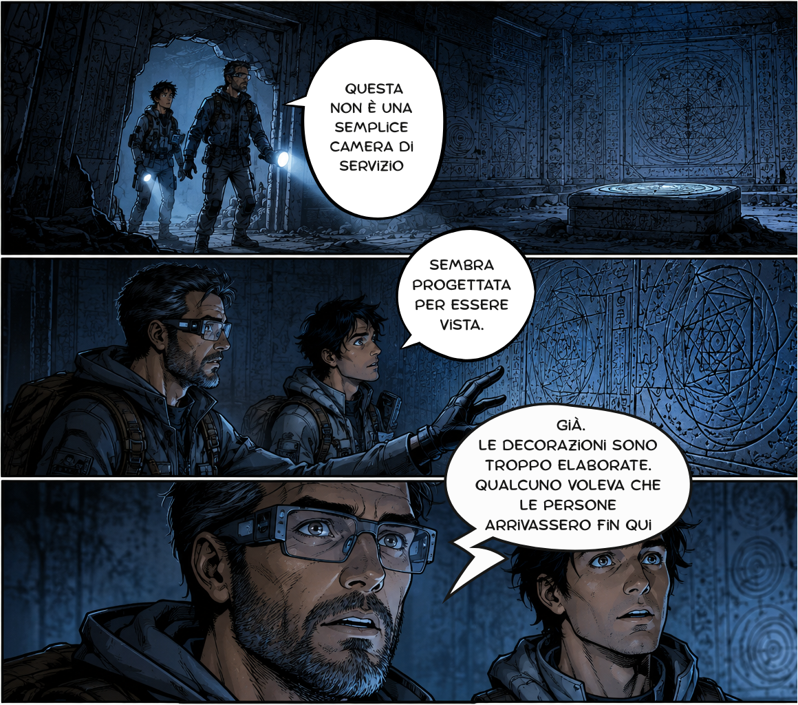

Il Libro
Cos'è Le Arche del Tempo

La storia intreccia le trame di due protagonisti, in due epoche separate da cinquemila anni, che scorrono parallele fino a intrecciarsi in modo indiretto. Leon, un archeologo che scopre delle antiche rovine nel 2047, e Nadia, una ragazzina che vive proprio nell'epoca in cui quelle rovine erano una città, governata da un imperatore e da una religione misteriosa.
L'intera narrazione è costruita come un grande mosaico. Archeologia, fisica teorica, intrighi politici si fondono in un unico schema, che aggiunge nuove domande ad ogni capitolo. Ogni dettaglio, ogni oggetto e ogni scoperta trovano posto all'interno di un disegno più ampio. Alla fine ogni pezzo dell'enigma va al suo posto, rivelando un quadro sorprendente, ma coerente e completo.
Conclusa l'ultima pagina, ci si accorge che gli indizi erano tutti in gioco, bastava saperli collegare. Perché, in fondo, il mistero più bello non è quello che nasconde le risposte, ma quello in cui le risposte sono sempre state davanti ai nostri occhi.
Tre motivi per NON leggere Le Arche del Tempo
-
Non c'è un vero antagonista
Non c'è nessun vero e proprio antagonista che muove gli eventi nell'ombra. Più che sconfiggere qualcuno, i protagonisti devono capire qualcosa.
-
Non ci sono astronavi.
Se siete in cerca dell'ennesimo Star Wars questo non è il posto giusto. Non troverete i classici elementi fantasy come magia, draghi o elfi. E nemmeno una fantascienza futuristica fatta di colonie spaziali, robot o tecnologie impossibili.
-
Non ci sono viaggi nel tempo
Abbiamo tutti una relazione di amore e odio verso i viaggi nel tempo: affascinanti, sì, ma il più delle volte portano a trame assurde e contraddizioni. Non li troverete in questo romanzo.